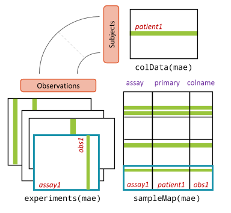

Getting started
2026-09-01
GetStarted.rmdUnderstanding the structure
Before starting to interact with the package you should understand the structure of the objects you’ll be working with. OPT borrows and expands from well-known Bioconductor packages for dealing with large-scale experimental data. The following two objects are the most important to understand:
-
OncoExperiment- a class that inherits from MultiAssayExperiment. It contains all the information needed to perform downstream analyses in the form of assays. -
*Assay- a class that inherits from SummarizedExperiment. Different types of assays exist to support loading various sources with different structures. Some examples include:RNAAssay,DrugResponseAssay, andPRISMAssay.
OncoExperiment
The OncoExperiment is the core object that contains all
the information. It harmonizes all the assays (or experiments) together
and maps them to the samples. OncoExperiment is primarily a
MultiAssayExperiment (MAE) with a few
additional methods to deal with oncogenic data. Although this guide will
summarize the structure to a degree, the authors of MAE
have created some wonderful quick
start guides and cheatsheets
with in-depth information. Please refer to these if you ever need help
navigating an OncoExperiment you’ve created.

Credit: “Software For The Integration of Multi-Omics Experiments In Bioconductor.” Marcel Ramos et. al.
Slots
A quick overview of the slots you should know about in an
OncoExperiment:
-
project_name- The name of the project for your own reference. -
ExperimentList- Contains all ID-based experimental data. An instance ofExperimentList. Access withexperiments(OncoExperiment). -
colData- Contains all sample-level metadata. An instance ofDataFrame. Access withcolData(OncoExperiment)or$. -
sampleMap- Helps to relate experiment-specific sample naming or replicate observations to the row names incolData. Access withsampleMap(OncoExperiment). -
metadata- Storing any additional metadata about the study. This is free to include anything. We store some basic information as alist. Individual assays can store additional metadata in their ownmetadataslot. Access withmetadata(OncoExperiment).
This quick start guide by the Waldron Lab has a lot more great information: Quick Start Guide. There is also a lot of useful examples showing these accessors in use.
Creating an OncoExperiment
exp <- OncoExperiment(project_name = "Murine RNA-Seq 04")
exp## An OncoExperiment object
## Project Name: Murine RNA-Seq 04
## Version: 0.1.0
## Experiments: noneSubsetting
To demonstrate accessing the data in an OncoExperiment,
let’s construct a simple example with an RNAAssay. We’ve
created an example file with a 5x5 table. Rows contain unique sample
names and colums contain unique gene names. The values are random
numbers between 1 and 10. We can peek at it to demonstrate how it is
structured:
## ModelID TSPAN6..7105. TNMD..64102. DPM1..8813. SCYL3..57147. FIRRM..55732.
## 1 ACH-001113 4.956577 0.000000 7.577648 3.179411 4.765742
## 2 ACH-001289 4.955015 0.617117 7.333933 2.782935 3.735371
## 3 ACH-001339 3.421952 0.000000 7.546069 2.615880 4.476233
## 4 ACH-001619 5.196729 0.000000 6.362268 2.144996 3.087183
## 5 ACH-001979 4.651643 0.000000 5.946408 2.454515 1.852111Now let’s load the data into an OncoExperiment:
# let's create a simple 5x5 table to load
example <- OncoExperiment(project_name = "Example")
example <- load_assays(example, AssayTypes$RNA, data = "assets/rna_example.csv")
example## An OncoExperiment object
## Project Name: Example
## Version: 0.1.0
## Experiments: RNA
##
## Experiment summary:
## experiment class dim
## RNA RNAAssay 5 x 5